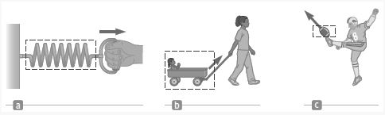
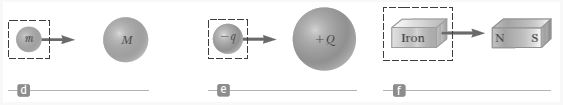
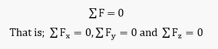
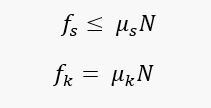

Newton's Law of Motion
-
Motion
- Kinematics is the language for describing motion of an object, which includes its position, velocity, and acceleration, but there was no consideration of what might influence that motion.
- Dynamics studies the causes of motion. The two main factors we need to consider to answer question about why the motion of an object will change are the forces acting on an object and the mass of the object. We begin our study of dynamics by discussing the three basic laws of motion, which deal with forces and masses and were formulated by Isaac Newton
-
Force
- Concepts of Force
- It is exerted as a push or pull.
- Forces are what cause any change in the velocity (acceleration) of an object.
- Forces are combined according to the rules of vector algebra. The net force on a body is the vector sum of all the forces acting on the body.
- Units of force
- The SI unit of force is the Newton (N).
- • 1 N = 1 kg·m / s^2
- (A force that accelerates 1 kg body by exactly 1 m/s2 is defined to have a magnitude of 1 N.)
- The US Customary unit of force is a pound (lb).
- Classes of Force
- Contact Forces involve physical contact between two objects, that is, they involve physical contact between two objects.
- 
- When a coiled spring is pulled, as in Figure a, the spring stretches. When a stationary cart is pulled, as in Figure b, the cart moves. When a football is kicked, as in Figure c, it is both deformed and set in motion. These situations are all examples of a class of forces called contact forces.
- Field forces act through empty space. No physical contact is required
- 
- The gravitational force of attraction between two objects with mass, illustrated in Figure d, the electric force that one electric charge exerts on another, shown in Figure e (such as the attractive electric force between an electron and a proton that form a hydrogen atom), and the force a bar magnet exerts on a piece of iron (Figure f) are some examples of field forces.
-
Newton's First Law
- Law of Inertia
- In the absence of external forces and when viewed from an inertial reference frame, an object at rest remains at rest and an object in motion continues in motion with a constant velocity (that is, with a constant speed in a straight line).
- The Particle in Equilibrium
- If the acceleration of an object that can be modeled as a particle is zero, the object is said to be in equilibrium. A body in equilibrium is a body that is either at rest or a body that is moving at uniform velocity. Mathematically, the net force acting on the object is zero.
- 
- Inertia and Mass
- The tendency of an object to resist any attempt to change its velocity is called inertia.
- Mass is that property of an object that specifies how much resistance an object exhibits to changes in its velocity. Mass is a measure of the inertia of an object
- Mass vs Weight
- Mass.
- A measure of the amount of matter or material in a body
- Independent of the object’s surroundings
- Scalar quantity (obeys the rules of ordinary arithmetic)
- Weight.
- Equal to the magnitude of the gravitational force (product of its mass and the freefall acceleration) exerted on the object
- Weight = mass x gravitational acceleration
- Weight will vary with location
- As a vector quantity, it is always directed downward or towards the center of the earth
-
Newton's Second Law
- Law of Acceleration
- The acceleration of an object is directly proportional to the net force acting on it, and is inversely proportional to the object's mass. The direction of the acceleration is in the direction of the net force acting on the object. Mathematically represented as:
- The Particle Under a Net Force
- If an object that can be modeled as a particle experiences an acceleration, there must be a nonzero net force acting on it.
-
Newton's Third Law
- Law of Action and Reaction
- Whenever one object exerts a force on a second object, the second exerts an equal force in the opposite direction on the first.
- Force of Friction
- When an object is in motion either on a surface or in a viscous medium such as air or water, there is resistance to the motion because the object interacts with its surroundings. We call such resistance a force of friction.
- Friction (f)
- • It is a tangential force acting on an object that opposes the sliding of that object on an adjacent surface with which it is in contact.
- • Primarily due to the roughness of the surfaces in contact.
- • Parallel to the surface and opposite to the direction of motion or of impending motion
- Two Types of Friction
- 1. Static friction (fs) - Acts when motion is just impending. No actual motion yet.
- 1. Kinetic friction (fk) - Acts when the body is already in motion.
- The force of static friction is generally greater than the force of kinetic friction
- • Friction is proportional to the normal force, N.
- Whenever a body is in contact with a surface, whether the body is moving or not, there is always a reaction of the surface to the total perpendicular force exerted on it by the body. This is called the Normal Force. It is exerted by the surface on the body and is always perpendicular to the surfaces in contact
- 
- Where: μ is the coefficient of friction
- The coefficient of friction depends on the surfaces in contact and are nearly independent of the area of contact.
- For static friction, the equals sign is valid only at impeding motion( the surfaces are on the verge of slipping) and use the inequality if the surfaces are not on the verge of slipping
- Friction is a force, so it simply is included in the ∑F in Newton’s Laws
- When solving problems involving Newton's laws and force, it is very important to draw a diagram showing all the forces acting on each object involved. Such a diagram is called a free-body diagram, or force diagram: choose one object, and draw an arrow to represent each force acting on it. Include every force acting on that object. If the problem involves more than one object, a separate free-body diagram is needed for each object. We consider for now, the likely forces that could be acting are gravity and contact forces (one object pushing or pulling another, normal force, friction).
-
Sample Problems
- 1. In a tug-of-war, each man on a 5-man team pulls with an average force of 500 N. What is the tension in the center of the rope?
- 2. The wheel of a car has a radius of 0.29m and it being rotated at 830 revolutions per 1minute on a tire-balancing machine. Determine the speed at which the outer edge of the wheel is moving.
- 3. What is the force of static friction between the top and bottom blocks of the previous problem?
- 4. A less massive object has more inertia than a more massive object.
- 5. In which one of the following situations does the car have a westward acceleration?
- A. The car travels westward at constant speed.
- B. The car travels eastward and speeds up.
- C. The car travels westward and slows down.
- D.The car travels eastward and slows down.